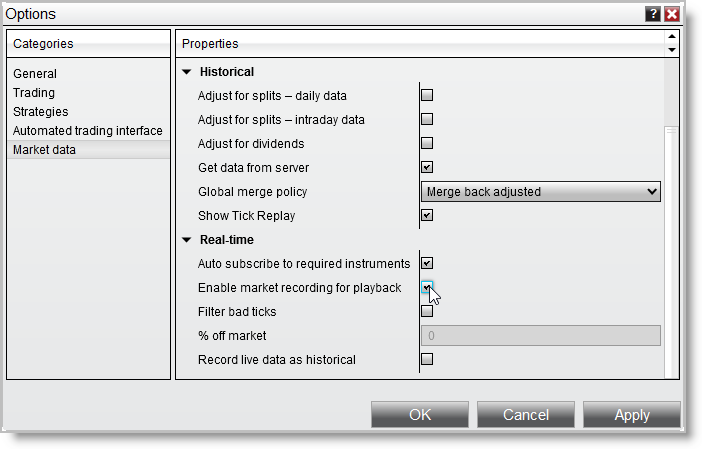

|
<< Click to Display Table of Contents >> Set Up |


|
Set Up
|
<< Click to Display Table of Contents >> Set Up |
|
You can Playback either Market Replay data or historical tick data. For the most accurate reflection of live market conditions you would want to use Market Replay data.
Notes: 1.Market Replay data holds the exact sequence level I and Level II (market depth) data and must be recorded or downloaded by NinjaTrader. 2.Alternatively, historical tick data can be used to playback chart data (without market depth). The granularity and accuracy of historical mode will be dependent on your data provider. 3.The Playback101 account properties (e.g., Commissions, Risk, etc.) are created from the Sim101 account when connecting to the Playback Connection and cannot be reset while connected. The Playback101 account will reset with current Sim101 account properties when reconnecting. 4.TimeInForce logic such as order expiration / cancellation at the end of a session, is not supported for the Sim101 or Playback101 accounts. 5.It is recommended to close and save your live workspaces then use dedicated workspaces for Playback before connecting to Playback to ensure items, such as drawing objects, are not affected in your live workspaces. |
 How to enable the market replay recorder
How to enable the market replay recorder
Enabling the Market Replay RecorderTo enable the replay recorder: 1.Left mouse click on the Tools menu and select the menu item Options. 2.In the Market Data category enable the option "Enable market recording for playback".

All live data from instruments that are active in any NinjaTrader window will now be recorded for playback. (see the "How to record live market data" section below) |
 How to record live market data
How to record live market data
Recording DataOnce Enable market recording for playback is enabled (see the "How to enable the market replay recorder" section above), data is recorded for any instrument in any NinjaTrader window that is receiving live market data. Level II (market depth) data is only recorded if a Level II, SuperDOM, or FX Pro window is open and receiving data for the instrument. The Market Analyzer window is the recommended recording window as multiple instruments can be added to one Market Analyzer window and all recorded at the same time. |
 How to download playback data from the NinjaTrader server
How to download playback data from the NinjaTrader server
Downloading Market Replay data for the Playback connectionMarket Replay data holds the exact sequence level I and Level II (market depth) data. NinjaTrader offers a limited amount of Market Replay data free to download for playback purposes. Only the most common instruments are currently available.
To download playback data: 1.Open the Historical Data window. The Historical Data window will open when initially connection to Playback or by going to the Control Center and selecting Tools then Historical Data. Here the section "Get Market Replay data" can be expanded. 2.Select the instrument and date of the desired replay data and press the OK button to begin the download.
The status of the download will appear in the lower right hand corner of the Historical Data Window.
Downloading historical tick data for the Playback connectionIf Market Replay data is not available, or you do not need the accuracy that Market Replay data provides, you can optionally use playback using historical tick data offered from your data provider. You can download, export, import historical tick data via the Historical Data Window. |
||